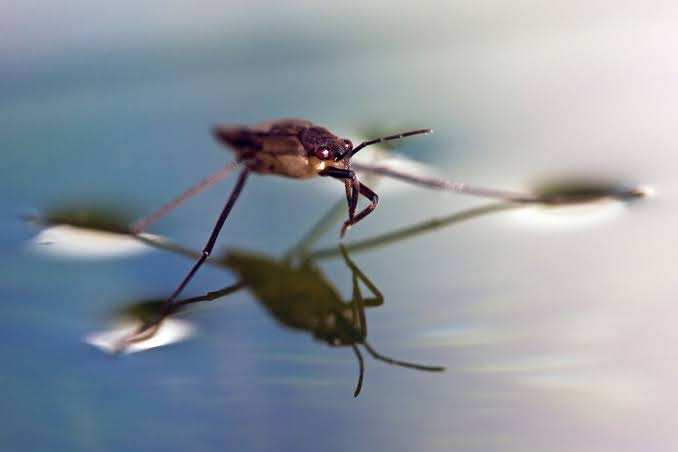
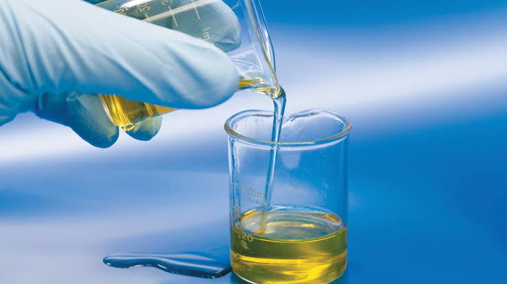
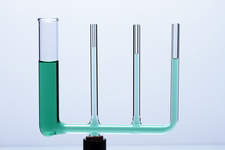
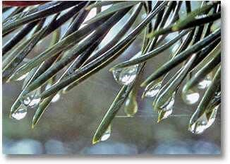
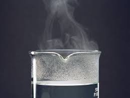
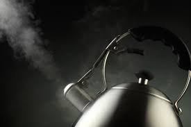

Lesson #2: PROPERTIES OF LIQUIDS AND INTERMOLECULAR FORCES (IMF)
Definitions
- Surface Tension - is the measure of the elastic force in the surface of a liquid. It is the amount of energy required to stretch or increase the surface of a liquid by a unit area. It is manifested as some sort of skin on the surface of a liquid or in a drop of liquid. 
- How intermolecular forces can influence the magnitude of surface tension?
-
Liquids that have strong intermolecular forces also have high surface tension. Water as an example of a liquid with high surface tension as a result of H-bonds, which are strong intermolecular forces.
- Viscosity - is a measure of a fluid’s resistance to flow. The greater the viscosity, the slower the liquid flows. 
- How can you relate viscosity or resistance to flow to strength of intermolecular forces that operate among molecules of the liquid?
-
The larger the molecule, even if it is nonpolar, the stronger the intermolecular forces and the greater the viscosity compared to nonpolar substances made up of small molecules.
- Capillary action - is the tendency of a liquid to rise in narrow tubes or be drawn into small openings such as those between grains of a rock. Capillary action, also known as capillarity, is a result of intermolecular attraction between the liquid and solid materials. 
- Two types of forces are involved in capillary action:
-
Cohesion is the intermolecular attraction between like molecules (the liquid molecules).
Example: A water drop is composed of water molecules that like to stick together.https://www.thoughtco.com/atoms-in-a-drop-of-water-609425
Adhesion is an attraction between unlike molecules (such as those in water and in the particles that make up the glass tube).

Example: A water drop is composed of water molecules that like to stick together.https://www.usgs.gov/special-topics/water-science-school/science/adhesion-and-cohesion-water#overview
- Vapor Pressure of a Liquid - Like any gas sample, the molecules in the gaseous state over its liquid create a pressure. The greater the number of gaseous particles, the greater the pressure exerted by the gas. The pressure exerted by the gas in equilibrium with a liquid in a closed container at a given temperature is called the equilibrium vapor pressure or simply vapor pressure of the liquid.
- Equilibirum Vapor Pressure - is the maximum vapor pressure of a liquid at a given temperature and that it is constant at a constant temperature. It increases with temperature. 
- Relate Vapor Pressure to Strength of Intermolecular Forces
-
For molecules with strong intermolecular forces, gathering enough energy may not be as easy, and register low vapor pressures.
- Molar Heat of Vaporization - The molar heat of vaporization (ΔHvap) is the energy required to vaporize 1 mole of a liquid at a given temperature. H is the symbol for enthalpy, which means heat content at a given standard condition. Relate molar heat of vaporization to strength of intermolecular forces
- The heat of vaporization may be considered a measure of the strength of intermolecular forces in a liquid. If the intermolecular attraction is strong, it takes a lot of energy to free the molecules from the liquid phase and the heat of vaporization will be high. 
- Boiling Point - The boiling point of a liquid is the temperature at which the liquid converts into a gas. A liquid boils when its vapor pressure equals the pressure acting on the surface of the liquid. The boiling point is the temperature at which the vapor pressure of a liquid is equal to the external pressure.
- The normal boiling point is the temperature at which the liquid converts to a gas when the external pressure is 1 atm. The normal boiling point of water is 100°C.